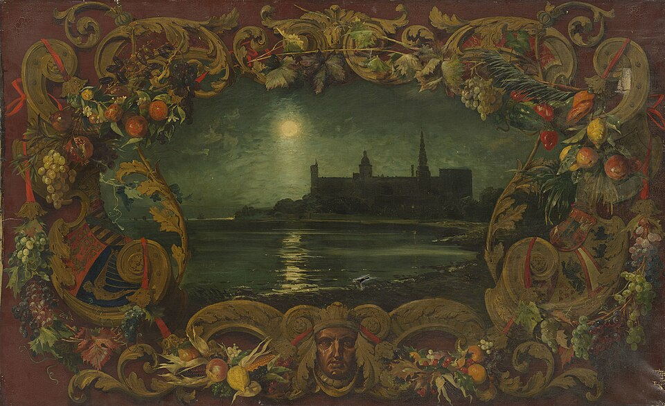

設計する部屋に、モデルルームに、ご自宅に。卸価格でのお取引もできます。

バラカ ― アラビア語で「祝福」。小さなものが、まわって、増えていく。
絵は部屋にのこり、お金は作家にまわる。 その名前が、次の部屋を見つける。 まわるほど、増えていきます。
神奈川県藤沢市。海の近くの工房で、朝と夕方で色の変わる壁を描いています。作品どうしの大きさの比率は実物どおりです。
表示価格はすべて税込です。配送・設置費は別途お見積りします。